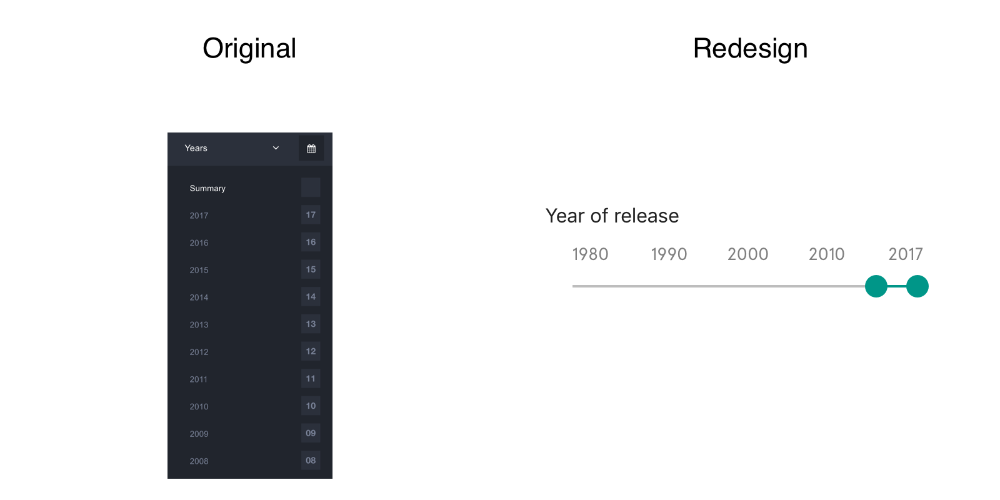
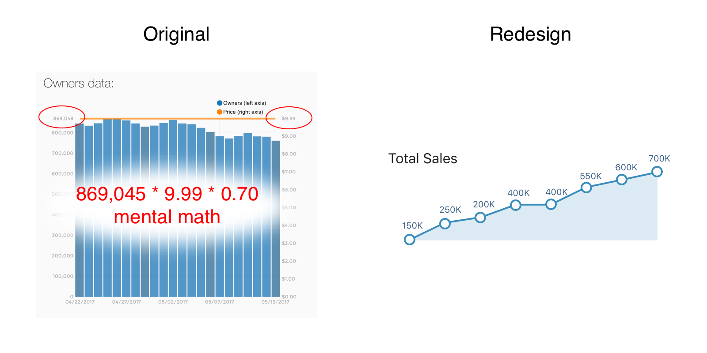
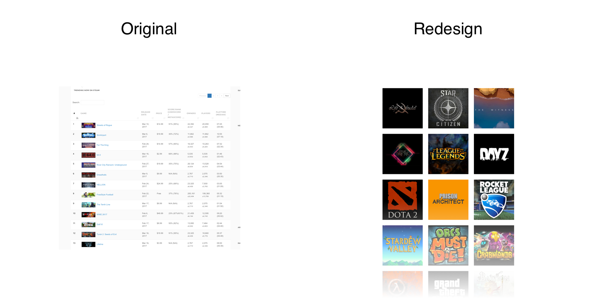

Steamspy.com is a website that shows how many people own or play a particular game. It has stats on total playtime, total owners, youtube viewers and twitch streamers. Steam Spy can be used by regular players to find a recently released popular games. This site is also very useful for game developers, because they can estimate how much money a game has made as well as find out how popular a particular genre is. They can also use this site to compare games against each other.
I'm going to redesign the Steam Spy website by using google material design. And I want to simplify navigation system and improve game filters.
Steam Spy has a huge library of games. Its the full steam catalog 8000 games.
Many filters and sorts help users to find exactly what they are looking for.
In the original site the filters are hard to understand. You couldn't filter by a year range, total players or total sales. I replaced this with filter where you can drag both start and end of the range.
Many game developers use Steam Spy to guess at the money the game has made. The formula is pretty simple number of owners * the price of the game. Steam takes about 30% and game developers keep 70%. This is pretty important use of the site. But this is totally lacking on Steam Spy itself. In my redesign I put the estimated game earnings front and center, enabling people to view it and search for it in filters.
Default view for steam spy is a list of games. I think that it works only for game developers, but not for players. Because players would like to see beautiful posters of the game and bigger pictures. That's why I created the gallery and the list views for users to pick which one they prefer.
